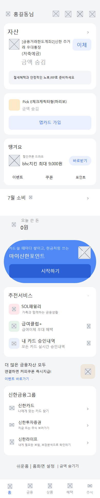
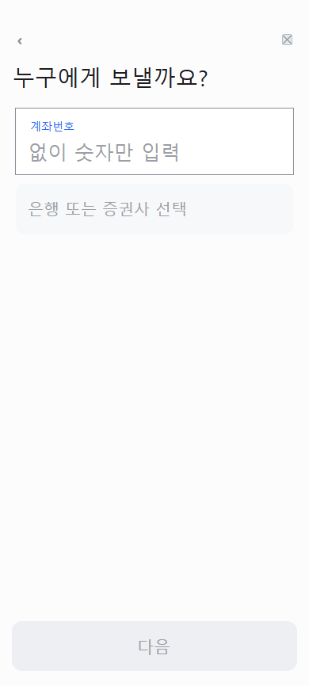
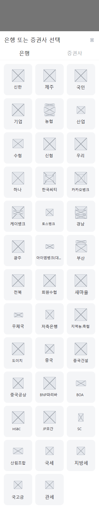
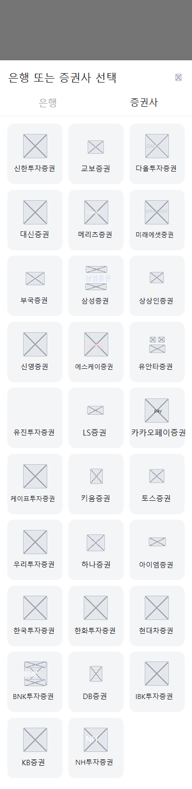
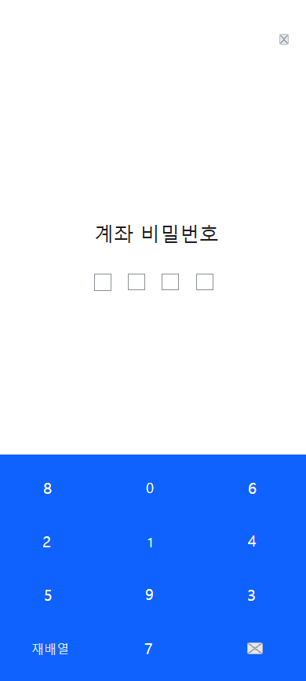
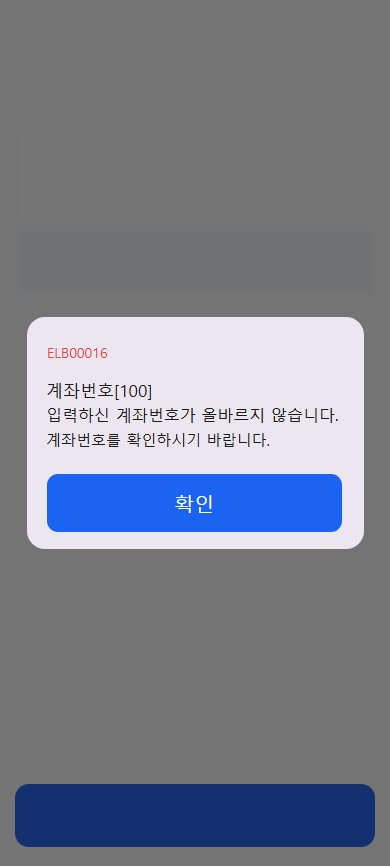

옛 home (글 0.94)


옛 recipient (글 0.80)


옛 account (글 0.71)


옛 account#2 (글 0.88)

옛 amount~1 (글 0.82) · 캡처 없음

옛 amount~2 (글 0.76) · 캡처 없음


옛 bank (글 0.95)


옛 bank+tab-sec (글 0.94)


옛 amount (글 0.91)

옛 confirm~1 (글 0.87)


옛 confirm (글 0.85)


옛 password (글 0.86)


옛 done (글 0.75)


옛 error:wrong-account (글 0.57)